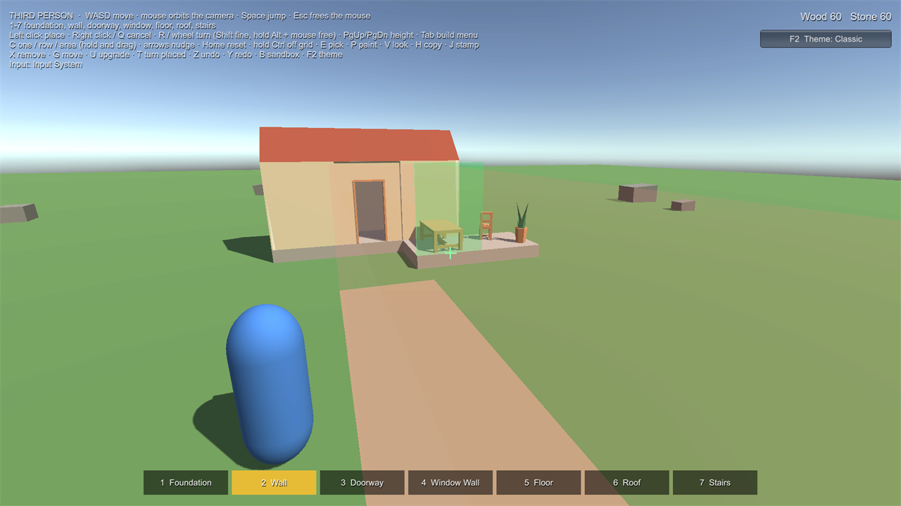
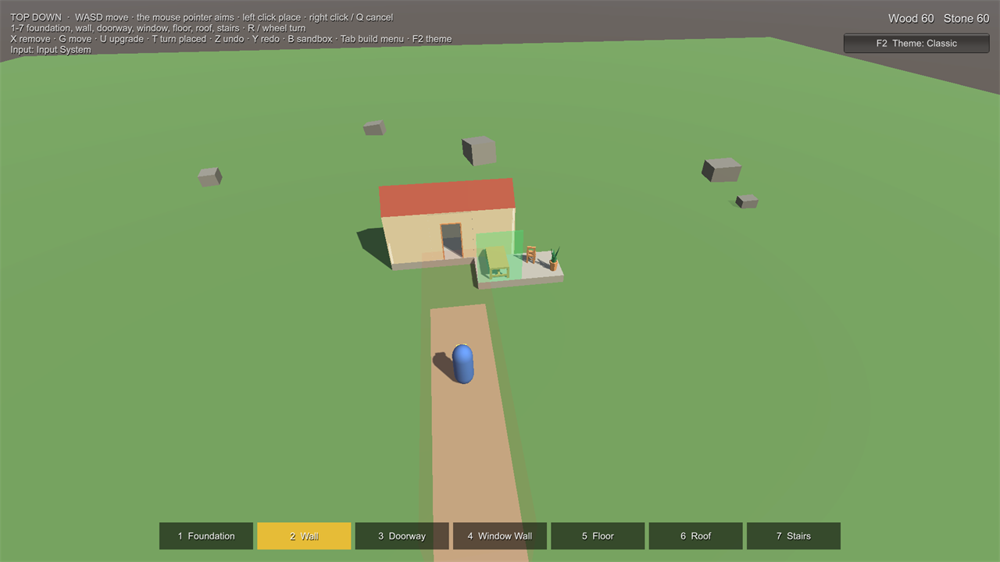
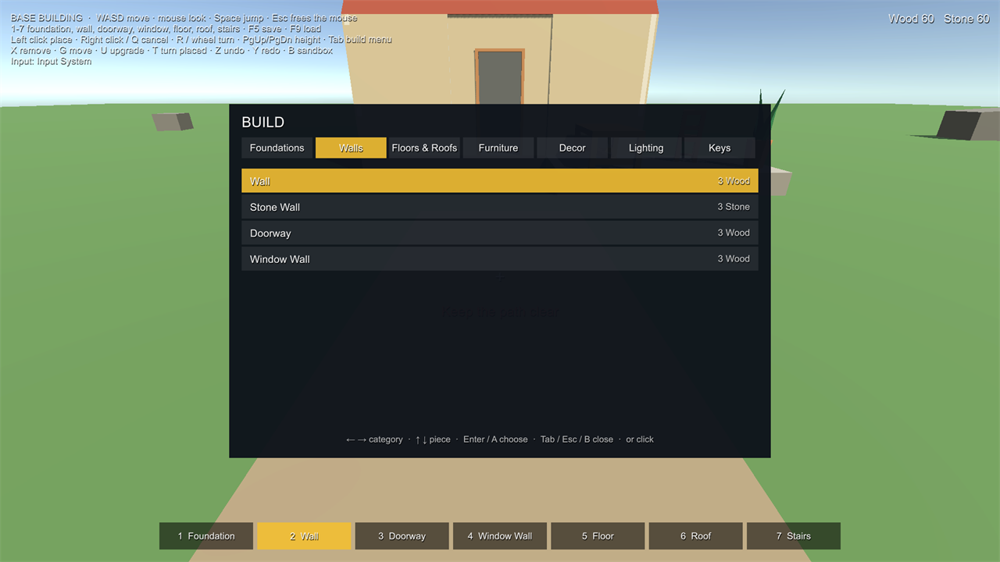

Samples
Every sample opens with no errors or warnings and needs no extra packages (the Input System is used when it's active; the Multiplayer sample needs Netcode for GameObjects). Each scene shows its keys on screen, and each folder has a short README.
| Scene | Shows |
|---|---|
Samples/BaseBuilding/RBK_BaseBuilding |
A cottage to extend: foundations, walls, doorway, window wall, floors, gable roof, stairs. Wood and Stone costs, wall upgrade (wood to stone), support rule, remove / move / turn, undo / redo, sandbox, save (F5) and load (F9). First person. |
Samples/Interior/RBK_Interior |
A furnished room: tables, chairs, a bookcase, rugs, books and plants that need support, pictures and lamps on walls, a ceiling lamp, turning pieces in place. First person. |
Samples/Controllers/RBK_ThirdPerson |
The base-building pieces with an orbiting third-person camera; reach measured from the character. |
Samples/Controllers/RBK_TopDown |
The same with a top-down camera: the mouse pointer aims through builder.Refresh(ray) / builder.Confirm(ray). |
Samples/Scenes/RBK_FirstSlice |
The smallest set-up: a foundation, a wall and a crate. The Home tab's Open Sample Scene opens it. |
Samples/Multiplayer/RBK_Multiplayer |
Host and join; host-authoritative building (see Multiplayer). |
Samples/Benchmark/RBK_Benchmark |
Places 900 foundations and times the placement preview on your machine (see Performance). No player. |



Keys #
WASD move, mouse look, number keys pick a piece. Left click places, right click or Q cancels, R or the mouse wheel turns the preview, PgUp / PgDn change height. X removes, G moves, U upgrades, T turns a placed piece, Z / Y undo and redo, B toggles sandbox, F2 switches the theme, Esc frees the mouse.
Placing: Shift + wheel turns in fine steps, hold Alt and move the mouse to turn freely, F switches snapped turning, Home resets the turn, the arrows nudge, I/K and U/O tilt (pieces that allow it), hold Ctrl to go off the grid, N switches the grid. C chooses one piece, a row or an area (hold the button and drag), E picks a placed piece's type, P is the Paint tool and V the next look, H copies a building and J stamps the sample's cottage. Every key can be changed on the build menu's Keys page.
What to try: in the Interior sample, books and plants turn freely and start at a random turn, books tilt, the side table goes on floors and on walls, and tables, chairs, sofas and rugs have looks to paint (two sofas per player at most). In Base Building, drag a row of walls or an area of foundations, and stamp the cottage. A gamepad works too (A jump, X place, B cancel, Y turn, LB / RB change piece; sticks need the Input System package).
Build menu #
Tab (gamepad View) opens every piece the world allows, one page per category (Foundations, Walls, Floors & Roofs, Furniture, Decor, Lighting in the samples). Left / right change page, up / down pick a piece, Enter (gamepad A) chooses it, Tab or Esc (gamepad B) closes; the mouse works too. Categories come from each Piece Definition's Category, so your own pieces sort themselves.
Changing the keys: with the Input System package, the menu's last page, Keys, lists the controls. Choose one and
press the new key or button (Esc cancels); Reset every key goes back to the defaults. Changes are saved between
sessions. This uses the Input System's own interactive rebinding (PerformInteractiveRebinding); the Input System
package also has a "Rebinding UI" sample (Package Manager > Input System > Samples) if you want ready-made UI for your
own menus. With the old Input Manager, keys are set in Project Settings > Input Manager.

How the samples are put together #
- One Build World per scene (registry, rules, costs through a Simple Resource Inventory) and one player with a
Builder. The sample scripts in
Samples/Scriptsonly turn input into Builder calls and draw the HUD:SampleBuildInput,SampleBuildMenu,SampleThemeSwitcherand the three small controllers. Replace them with your own. The HUD is the kit's own Build Presentation and Build HUD (see Make it yours). - Sample Starting Build loads a saved build (a JSON file next to the scene) when you press Play, so the scenes start
with something to look at. It is an ordinary save:
world.LoadSave(data). - The pieces (
Samples/Showcase) were made with Make Buildable presets: Foundation, Wall, Floor (the roof is a floor preset without top sockets), Furniture and Wall Mounted.
Sample art and render pipelines #
The models are from Kenney's Furniture Kit (CC0, Samples/Art/Kenney, licence file included) plus a few of our
own (foundation slab, gable roof, picture). A small Sample Look component gives them flat colours with the current
pipeline's default lit material, so the same scenes look the same in the Built-in Render Pipeline, URP and HDRP. It is
only for the samples: your own pieces use your own materials.